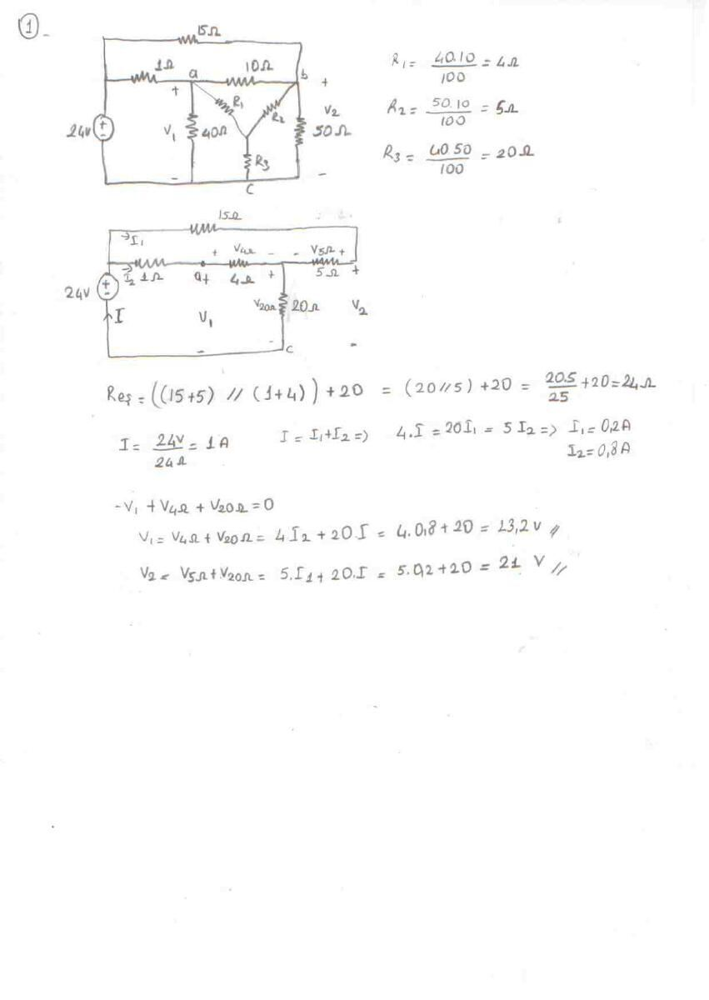
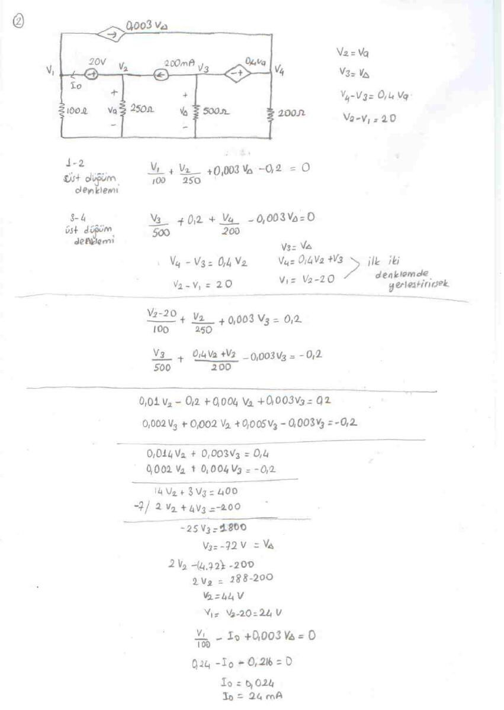
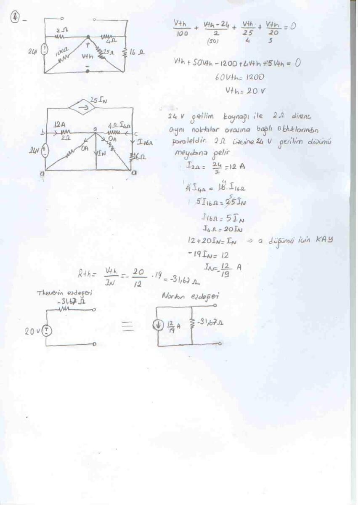
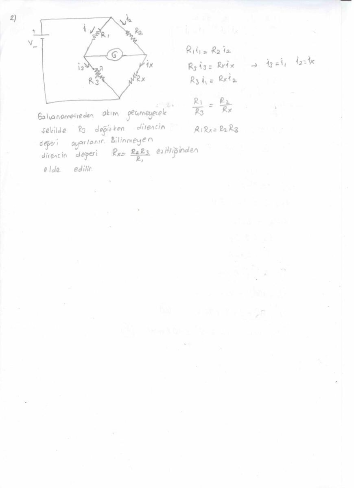
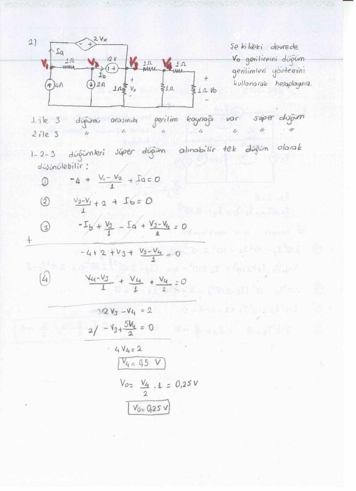
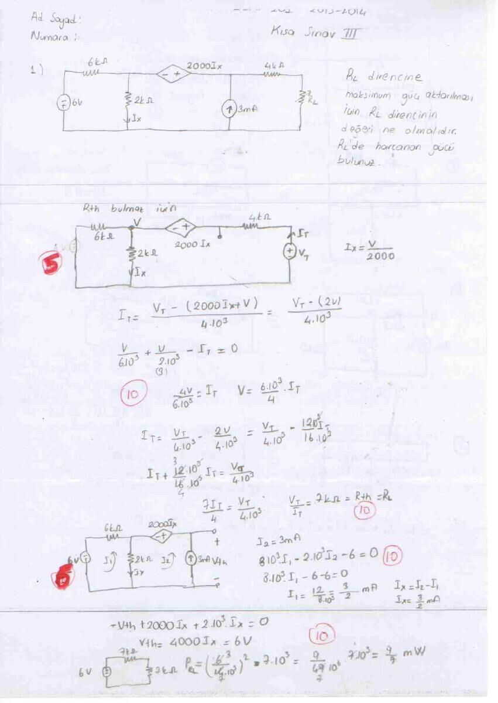
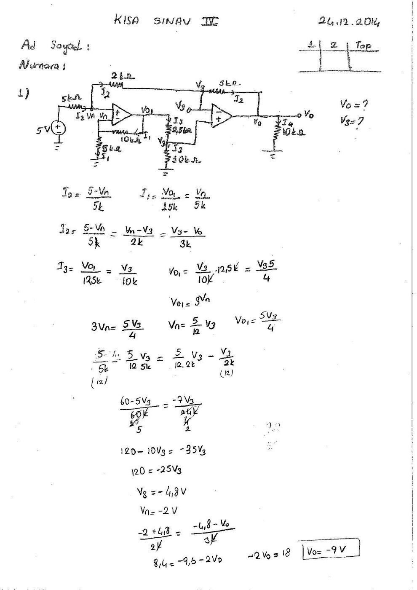
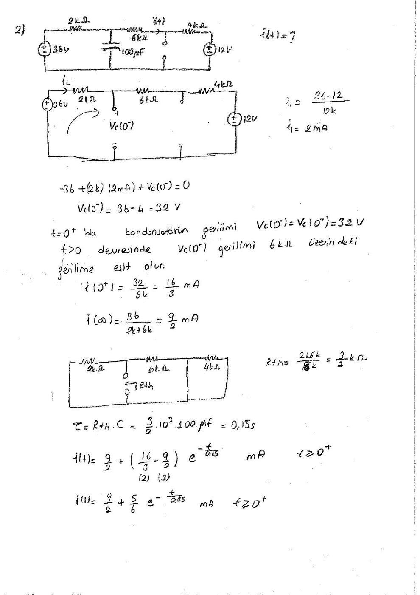

· EEM201
EEM201 Devre Teorisi I: 2014 Güz Kısa Sınav ve Ara Sınav Çözümleri
EEM201 – Devre Teorisi I · 21.01.2015 · 18.10.2026
EEM202 klasöründe saklanan bu EEM201 Devre Teorisi I çözüm grubu, 2013–2014 ve 2014–2015 güz dönemlerinin kısa sınavları ile dört sayfalık ara sınav çözümünü içeriyor. Kısa Sınav II başlığında EEM201 kodu açıkça yazılıdır; diğer sayfalar aynı DC devre çözüm grubundadır. Bir arkadaşın hazırladığı el yazısı çözümlerdeki kimlik alanları boş; adı belirtilmeyen çözücünün adı yazıya eklenmedi. Kısa Sınav IV 24 Aralık 2014 tarihlidir; diğer taramaların dosya tarihi 21 Ocak 2015'tir. Nötr adlarla hazırlanmış PDF'ler yazının sonunda ZIP olarak indirilebilir.
Ara sınav: direnç dönüşümü ve bağımlı kaynaklar
Direnç ağının çözümü
40 Ω, 10 Ω ve 50 Ω üçgeninin yıldız karşılıkları:
- R₁ = 40·10/100 = 4 Ω
- R₂ = 10·50/100 = 5 Ω
- R₃ = 40·50/100 = 20 Ω
Kaynak tarafından görülen eşdeğer R_eş = (15 + 5) ∥ (1 + 4) + 20 = 24 Ω, 24 V kaynağın akımı I = 1 A. Akım bölmesinden I₁ = 0,2 A ve I₂ = 0,8 A. El yazısı sonuçlar V₁ = 23,2 V, V₂ = 21 V.

Düğüm gerilimleri
Bağımlı kaynaklı devrede V₂ = Vₐ, V₃ = VΔ, V₄ − V₃ = 0,4Vₐ ve V₂ − V₁ = 20 bağıntıları kullanılır. Süperdüğüm denklemleri:
- 14V₂ + 3V₃ = 400
- 2V₂ + 4V₃ = −200
Buradan V₃ = VΔ = −72 V, V₂ = Vₐ = 44 V, V₁ = 24 V. Akım hesabı 0,24 − I₀ − 0,216 = 0; I₀ = 24 mA.

Çevre akımları
2 mA akım kaynağı için I₂ = 2 mA. Bağımlı kaynak nedeniyle I₃ = 2Iₓ ve Iₓ = I₂ − I₁. Çevre denklemi 6 + 3·10³I₁ − 2·10³I₂ − 10³I₃ = 0. Yerine koyunca I₁ = 0,4 mA; aranan kol akımı I₀ = I₃ − I₁ = 2,8 mA.
Thevenin ve Norton
Yük açıkken düğüm çözümünden V_Th = 20 V. Norton akımı için kaynak dönüşümleri yapılıyor; I_N = 12/19 A, R_Th = 95/3 Ω ≈ 31,66 Ω.

Dirençli devre ve Wheatstone köprüsü
Ayrı iki sayfalık çözümde 6 kΩ kolundaki 0,5 mA akımın oluşturduğu gerilim 3 V. Devredeki akım bölüşümüyle V₀ = 36 V, kaynağın gücü P = −108 mW bulunmuş.
Wheatstone köprüsünde galvanometre akımı sıfırsa köprü dengededir. Çizimdeki adlandırmayla R₁i₁ = R₂i₂ ve R₃i₁ = Rₓi₂; dolayısıyla R₁/R₃ = R₂/Rₓ, Rₓ = R₂R₃/R₁.

Kısa Sınav II: Çevre ve düğüm yöntemleri
Birinci soruda Iₓ çevre akımları yöntemiyle isteniyor. I₁ = 2 mA, I₂ = Iₓ ve I₃ − I₂ = 2 mA. Denklemler 3·10³ I₃ = 8 sonucuna indirgenmiş:
Iₓ = I₃ − 2 mA = (8/3 − 2) mA = 2/3 mA.
İkinci soruda gerilim kaynağıyla bağlı iki düğüm için süperdüğüm kuruluyor. El yazısı çözümde V₂ = 0,5 V, direnç bölücüsünden V₀ = V₂/2 = 0,25 V.

Kısa Sınav III: Maksimum güç ve süperpozisyon
Bağımlı kaynak korunarak uygulanan test kaynağı hesabında R_Th = 7 kΩ bulunmuş. Maksimum güç için R_L = 7 kΩ seçilmiş; açık devre gerilimi V_Th = 6 V, yük gücü 9/7 mW olarak verilmiştir.
İkinci soruda 6 mA, 3 mA ve 12 V kaynaklarının katkıları ayrı hesaplanıyor. El yazısındaki sonuçlar I₀′ = 0, I₀″ = 4/5 mA, I₀‴ = −6/5 mA. Toplam I₀ = −2/5 mA.

Kısa Sınav IV: İki op-amp ve RC geçici rejimi
Op-amp devresi
5 V kaynak, 5 kΩ giriş direnci, 2 kΩ ve 3 kΩ bağlantı dirençleri ile iki op-amp bulunuyor. İlk kademede V_o1 = 3V_n; ikinci kademenin bölücüsünden V_o1 = 5V₃/4. Bu nedenle V_n = 5V₃/12.
(5 − V_n)/5k = (V_n − V₃)/2k eşitliği V₃ = −4,8 V, V_n = −2 V verir. Son bağlantıda (V_n − V₃)/2k = (V₃ − V_o)/3k; buradan V_o = −9 V.

RC devresi
36 V ve 12 V kaynakları, seri 2 kΩ, 6 kΩ, 4 kΩ dirençler ve 100 µF kondansatör var. Anahtar değişiminden önceki kalıcı durumda:
- i₁ = (36 − 12)/12k = 2 mA
- V_C(0⁻) = 36 − 2k·2 mA = 32 V
- V_C(0⁺) = V_C(0⁻)
- i(0⁺) = 32/6k = 16/3 mA
- i(∞) = 36/(2k + 6k) = 9/2 mA
- R_Th = 2k ∥ 6k = 1,5 kΩ; τ = R_Th C = 0,15 s.
i(t) = 9/2 + (5/6)e^(−t/0,15) mA, t ≥ 0.

Not: Bu son ifade başlangıçta 16/3 mA, sonsuz zamanda 9/2 mA verir. El yazısı çözümün başlangıç ve son değerleriyle tutarlıdır.